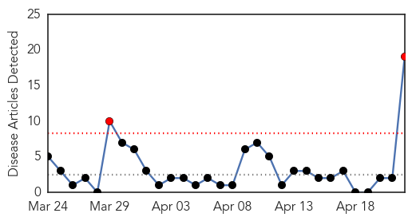
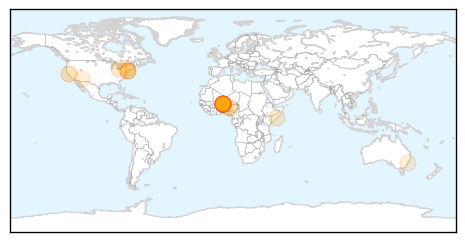

30 Day Trends
Web: 2 alerts, 0 warnings
Twitter: 0 alerts, 0 warnings
Top Articles:
- 0.982
- Niger meningitis: Schools shut to curb outbreak
- 0.951
- Niger Closes Schools to Try to Stop Spread of Meningitis
- 0.943
- Niger: Niger Closes Schools to Try to Stop Spread of Meningitis
- 0.935
- Niger Closes Schools to Try to Stop Spread of Meningitis
- 0.929
- Niger closes schools after meningitis outbreak
- 0.925
- Niger: Schools shut to curb meningitis outbreak as death toll rises to 85
- 0.902
- UPDATE 1-Niger shuts schools and vaccinates children to fight meningitis outbreak
- 0.899
- New Jersey teacher diagnosed with viral meningitis
- 0.885
- Kaduna State Government Commissions Disease Control Centre
- 0.835
- St. Mary’s student diagnosed with meningitis
- 0.805
- St. Mary's College student hospitalized with case of meningitis - Story
- 0.772
- Saint Mary's College in Moraga takes precautions after meningitis scare
- 0.712
- Meningococcemia vaccinations reach over 10,000 students with first dose
- 0.646
- North Olmsted teacher diagnosed with viral meningitis, prompting calls to parents
- 0.637
- The most from the coast
- 0.603
- Patient, doctors' groups urge mandated meningitis vaccine
- 0.507
- South Amboy Teacher Comes Down With Viral Meningitis « CBS New York
- 0.505
- This newborn baby nearly died from meningococcal B.
- 0.500
- Blue Bell listeria outbreak may be five years old, CDC says
Top Tweets:
-
No tweets found for Apr 22, 2015
Web/News Articles
Tweets

Article Locations
Article Confidences